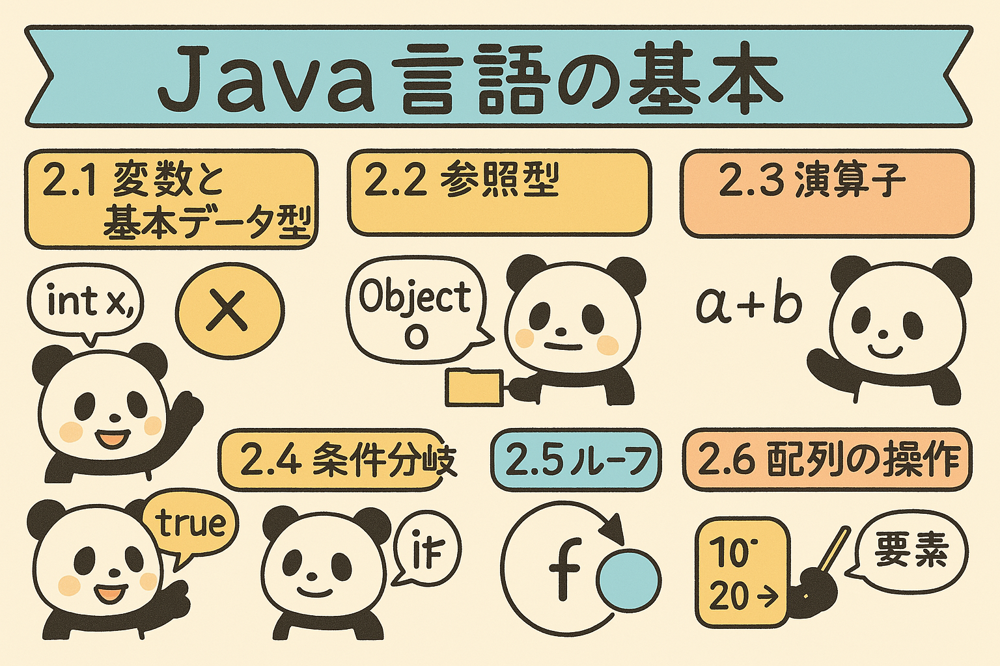

この章では、Java言語の基本的な要素について学びます。変数とデータ型、演算子、条件分岐、ループ、配列といった、どんなJavaプログラムでも必須となる基本構成要素を把握しましょう。
変数とは、プログラム内でデータを保存するための「名前付きの箱」です。Javaでは変数を使う前に、必ず「型」を宣言する必要があります。
データ型 変数名; // 変数の宣言
データ型 変数名 = 初期値; // 宣言と同時に初期化
例えば：
int number; // 整数型の変数を宣言
number = 10; // 値を代入
double price = 29.99; // 小数点数値を宣言と同時に初期化
Javaには8つの基本データ型があります：
| データ型 | サイズ | 説明 | 例 |
|---|---|---|---|
| byte | 8ビット | -128から127までの整数 | byte b = 100; |
| short | 16ビット | -32,768から32,767までの整数 | short s = 1000; |
| int | 32ビット | 約±21億までの整数 | int i = 50000; |
| long | 64ビット | とても大きな整数 | long l = 9223372036854775807L; |
| float | 32ビット | 単精度浮動小数点数 | float f = 3.14f; |
| double | 64ビット | 倍精度浮動小数点数 | double d = 3.14159; |
| boolean | 1ビット | 真偽値（trueまたはfalse） | boolean flag = true; |
| char | 16ビット | 1つの文字（Unicode） | char c = 'A'; |
図2.1: Javaのデータ型の分類
次の要件を満たす変数を宣言し、初期化してください：
参照型とは、プリミティブ型以外のすべてのデータ型を指します。プリミティブ型がデータそのものを保持するのに対し、参照型は実際のデータへの「参照」（メモリ上のアドレス）を保持します。
// 文字列の宣言と初期化
String greeting = "こんにちは";
String name = "田中";
String message = greeting + "、" + name + "さん!"; // 文字列の連結
// 文字列の長さを取得
int length = message.length(); // 12が返される
// 部分文字列の取得
String substr = message.substring(0, 5); // "こんにちは"を取得
// 文字列の比較
boolean isEqual = greeting.equals("こんにちは"); // true
boolean isEqual2 = greeting == "こんにちは"; // これは使わない方がよい
Java で文字列を比較する場合、==演算子ではなく、equals()メソッドを使用することが重要です。
// 配列の宣言と初期化
int[] numbers = new int[5]; // 5つの整数を格納できる配列
numbers[0] = 10; // 最初の要素に値を代入
numbers[1] = 20;
numbers[2] = 30;
numbers[3] = 40;
numbers[4] = 50;
// 初期化と同時に値を設定
int[] scores = {95, 80, 75, 88, 92}; // 要素数は自動的に5になる
// 多次元配列
int[][] matrix = {
{1, 2, 3},
{4, 5, 6},
{7, 8, 9}
}; // 3x3の二次元配列
図2.2: 1次元配列と2次元配列の表現
次の課題を解いてみましょう：
演算子は、変数や値に対して計算や比較を行うための記号です。Javaには様々な種類の演算子があります。
| 演算子 | 説明 | 例 | 結果 |
|---|---|---|---|
| + | 加算 | 5 + 3 | 8 |
| - | 減算 | 5 - 3 | 2 |
| * | 乗算 | 5 * 3 | 15 |
| / | 除算 | 5 / 3 | 1（整数同士の場合） |
| % | 剰余（余り） | 5 % 3 | 2 |
| ++ | インクリメント | i++（後置） ++i（前置） |
変数の値を1増やす |
| -- | デクリメント | i--（後置） --i（前置） |
変数の値を1減らす |
| 演算子 | 説明 | 例 | 結果 |
|---|---|---|---|
| == | 等しい | 5 == 5 | true |
| != | 等しくない | 5 != 8 | true |
| > | より大きい | 8 > 5 | true |
| < | より小さい | 5 < 8 | true |
| && | 論理AND（かつ） | true && true | true |
| || | 論理OR（または） | true || false | true |
| ! | 論理NOT（否定） | !true | false |
図2.3: 論理演算子の真理値表
次の問題を解いてください：
条件分岐は、特定の条件に基づいてプログラムの実行パスを変更する制御構造です。
if (条件) {
// 条件がtrueの場合に実行されるコード
}
if (条件) {
// 条件がtrueの場合に実行されるコード
} else {
// 条件がfalseの場合に実行されるコード
}
if (条件1) {
// 条件1がtrueの場合に実行されるコード
} else if (条件2) {
// 条件1がfalseで、条件2がtrueの場合に実行されるコード
} else {
// すべての条件がfalseの場合に実行されるコード
}
図2.4: 条件分岐のフロー図
switch (式) {
case 値1:
// 式が値1と等しい場合に実行されるコード
break;
case 値2:
// 式が値2と等しい場合に実行されるコード
break;
default:
// 式がどの値とも一致しない場合に実行されるコード
}
次の課題を解いてください：
ループ（繰り返し）は、同じコードブロックを複数回実行するための制御構造です。
for (初期化; 条件; 更新) {
// 繰り返し実行されるコード
}
図2.5: forループとwhileループの流れ図
for (要素の型 変数名 : 配列またはコレクション) {
// 各要素に対して実行されるコード
}
while (条件) {
// 繰り返し実行されるコード
}
do {
// 繰り返し実行されるコード
} while (条件);
次の課題を解いてください：
配列は同じデータ型の複数の値をまとめて格納するためのデータ構造です。ここでは、配列の基本的な操作方法を学びます。
// 方法1: 宣言と同時に初期化
int[] numbers = {10, 20, 30, 40, 50};
// 方法2: サイズを指定して宣言し、後で個別に値を代入
int[] scores = new int[5]; // 5つの要素を持つ配列を作成
scores[0] = 85;
scores[1] = 90;
scores[2] = 78;
scores[3] = 88;
scores[4] = 92;
int[] numbers = {10, 20, 30, 40, 50};
// for文を使った配列の走査
for (int i = 0; i < numbers.length; i++) {
System.out.println("要素 " + i + ": " + numbers[i]);
}
// 拡張for文（for-each）を使った配列の走査
for (int number : numbers) {
System.out.println(number);
}
次の課題を解いてください：
以下の問題に答えて、第2章の内容の理解度を確認しましょう。
問題1: 次のJavaコードの出力として正しいのはどれですか？
int x = 5; System.out.println(x++ + ++x);
問題2: 次のコードでstring1とstring2を比較するのに適切な方法はどれですか？
String string1 = "Hello";
String string2 = new String("Hello");
問題3: 次のコードの出力は何ですか？
int[] array = {1, 2, 3, 4, 5};
for (int i = 0; i < array.length; i += 2) {
System.out.print(array[i] + " ");
}
問題4: 次のループの実行回数は何回ですか？
int i = 5;
while (i > 0) {
System.out.println(i);
i--;
}